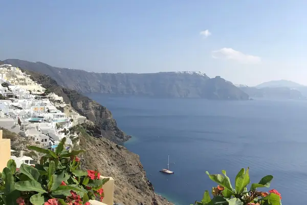

Home › Wine regions › Santorini
Santorini wine region

Photo: Annie Hogan on Unsplash
Volcanic, saline whites.
Ancient winemaking and many native grapes, from island whites to northern reds.
Climate and soil
Windy, arid island with volcanic ash and pumice soils. Almost no rainfall.
Key areas and appellations
Santorini PDO
Good to know
Vines are woven into low baskets (kouloura) to shelter grapes from the wind. Also makes the sweet wine Vinsanto.
The grapes of Santorini
- Assyrtiko (white): lemon, mineral, saline. Best known in Santorini.
Notable producers in Santorini
- Sigalas
- Gaia Wines
- Hatzidakis
- Estate Argyros
- Santo Wines
Santorini wines to try
Domaine Sigalas Assyrtiko
Bone-dry volcanic white: lemon, saline minerality and firm acidity.
Food: Grilled fish, seafood
Gaia Wines Thalassitis
Bone-dry and taut, with lemon pith, crushed volcanic stone and a salty tang that lingers like sea spray.
Food: Grilled octopus with lemon and oregano
Estate Argyros Vinsanto
Santorini · Assyrtiko, Athiri, Aidani
Sun-dried grapes give dried apricot, fig, coffee and orange peel, lifted by Santorini's trademark acidity.
Food: Baklava, blue cheese
Hatzidakis Assyrtiko de Mylos
Old-vine Assyrtiko with lemon pith, flint and sea spray, powerful and bone dry with a gripping, salty finish.
Food: Grilled sea bream, octopus with fava
Food to try with Santorini wines
- Grilled sea bass: Delicate grilled fish wants crisp coastal whites; Albariño, Vermentino and Assyrtiko bring citrus and a sea-spray freshness.
- Spanakopita: Salty feta, spinach and herbs in crisp filo match the zesty acidity and saline minerality of Greek Assyrtiko.
- Halloumi skewers: Salty, squeaky grilled halloumi with honey loves a zesty Mediterranean white or dry rosé to balance salt and sweetness.
- Courgette fritters: Crisp, herby fritters work with fresh, unoaked whites whose acidity cuts the frying oil and lifts the green flavours.
- Imam bayildi: Olive-oil-rich stuffed aubergine with tomato and onion suits a mineral white, dry rosé or soft, low-tannin Greek red.
- Greek saganaki: Salty, pan-fried cheese with lemon suits a crisp, mineral Assyrtiko or a dry Xinomavro rosé that cuts the fat.
Wine stories about Santorini
More wine regions in Greece
The Wine Reference newsletter
New wines, stories and career guides, one email a week at most.
Over 18s only. Unsubscribe any time with one click. Your email is stored securely by Kit and never shared.
Support The Wine Reference
This guide is free, with no paywall. If it helped you choose a bottle, you can buy me a glass and keep it growing.
🍷 Buy me a glass